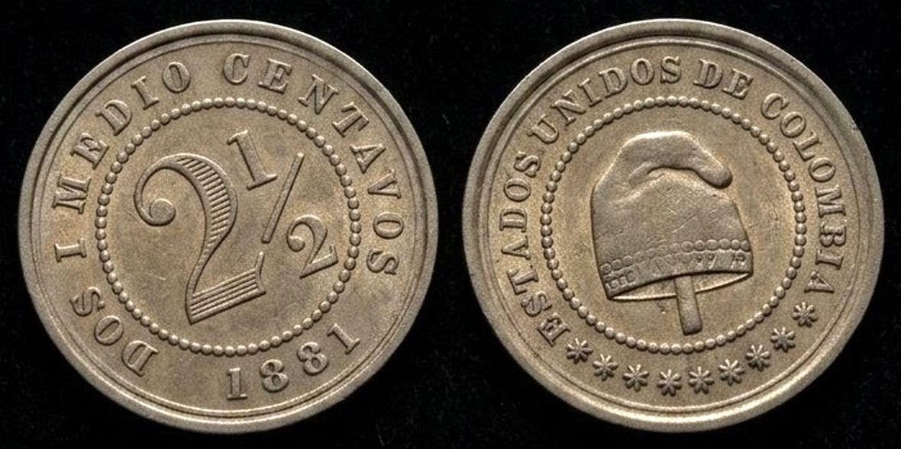
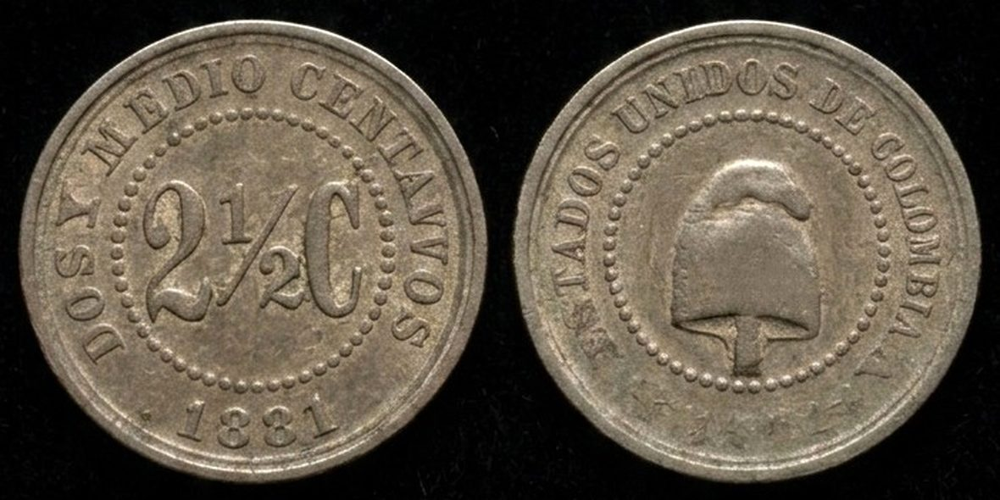
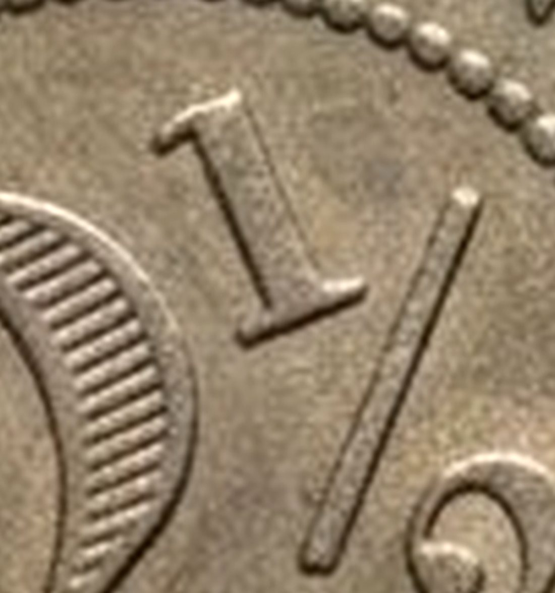
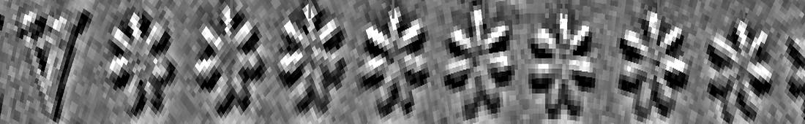

Dos centavos y medio emitidos por un país que ya no existe y acuñados en dos ciudades que nunca fueron suyas. Cabe bajo una uña. Sobrevivió a una guerra que el papel no resistió.
La saqué del sobre con unas pinzas y la puse sobre la mesa. No brilla. Casi no pesa. Uno espera que algo tan viejo se note al levantarlo, y esto no se nota: es una lámina gris del tamaño de una uña. La acerqué a la lámpara para leer lo que dice alrededor. Y me quedé en el número.
¿Por qué una moneda con una fracción?
¿Vienes con niños? Hay una versión de esta exposición para ellos, con la misma historia contada como aventura.
Dos preguntas abren este recorrido. La primera —por qué una moneda lleva una fracción— tiene respuesta, y está en la Sala III.
La segunda no. Un jornalero de la Sabana de Bogotá ganaba entre treinta y cuarenta centavos al día: doce piezas como esta, apiladas, no llegan a un centímetro de alto y valían una jornada de trabajo.28 Sabemos la proporción. No sabemos la cosa. Nadie ha encontrado todavía la factura que diga qué daban por ella, y quien escribe esto tampoco. Esa pregunta va a reaparecer al pie de cada sala y sigue abierta al final.
Esta exposición lleva dos capas encima de la misma superficie: el relato, y el aparato que lo sostiene —fichas de catálogo, procedencias, reservas, llamados a fuente—. En un museo esas dos capas van separadas: la cartela en la pared, el catálogo en el libro. Aquí eliges cuál ves. No se retira nada: se repliega, y vuelve con un toque.
Eso es todo. Lo que sigue son siete salas con el detalle, las cuentas y las fuentes; una octava —la Sala VIII— con lo que esta exposición todavía no sabe, que es donde termina la investigación y no en el desenlace; y una novena, la última, que explica por qué existe todo lo anterior.
El mismo valor, el mismo año, dos monedas distintas. Ninguna se hizo en Colombia.
El círculo punteado es un dime, la moneda más pequeña que circula hoy en Panamá: 17,91 mm. Esta pieza de 1881 es todavía más chica. La otra, la de 18 mm, mide casi exactamente lo mismo que el dime.
Arrastra hasta que el rectángulo mida lo mismo que una tarjeta de crédito apoyada sobre la pantalla.
| Ejemplar | Diámetro | Espesor medido | Espesor nominal | Diferencia | Peso |
|---|---|---|---|---|---|
| 18 mm · KM# 180 | 18,0 ± 0,02 mm | 1,20 ± 0,02 mm | 1,3 mm | −0,10 mm (−8 %) | pendiente |
| 14,3 mm · KM# 179 | 14,0 ± 0,02 mm | 0,85 ± 0,02 mm | 1,0 mm | −0,15 mm (−15 %) | pendiente |
Los dos clips en rotación no son fotografías de las piezas ni escaneos del : son imágenes generadas por inteligencia artificial a partir de fotografías de los ejemplares del autor. No están aquí para documentar la moneda —de eso se ocupan las fotografías de arriba— sino para verla de otra manera, y para dejar a la vista qué hace una máquina generativa cuando se le entrega un objeto diminuto, gastado y sin brillo.
Se exponen sabiendo lo que hacen. Con la fotografía del mismo ejemplar unos centímetros más arriba, lo que cada clip añadió deja de ser una sospecha del curador y pasa a ser algo que cualquiera puede cotejar renglón por renglón. Esa comparación es la pieza.
Los dos clips no se generaron igual y esa diferencia se deja a la vista. El de 18 mm corresponde a una segunda pasada, hecha ya conociendo estos problemas: el canto sale liso y el metal conserva el gris frío. El de 14,3 mm conserva los resultados de la primera. La primera no se corrigió ni se retiró, porque la distancia entre las dos es parte de lo que hay que ver.
Lo que sí sostienen: la proporción entre las dos piezas, la disposición general de las leyendas y el desgaste de dos monedas que estuvieron en circulación.
Como en pantalla —y en cualquier reproducción— las piezas se ven más gruesas de lo que son, esta sala pone al lado el dibujo a escala: el perfil de cada moneda visto de canto, liso y a escala uno a uno. La barra llena es el espesor medido sobre el ejemplar; la línea punteada verde, el nominal de catálogo; la punteada gris, una tarjeta de crédito. Si hiciste la calibración de arriba, todo esto mide en tu pantalla lo mismo que mide en la mano.
El espesor nominal es una especificación de fabricación con tolerancia, no el promedio de las piezas acuñadas; y una medición manual tiene su propio margen. Con esa reserva, la diferencia va en la misma dirección en las dos monedas y es mayor en la que más circuló.
La ficha declara ahora la incertidumbre instrumental del calibre, que antes no constaba: ±0,02 mm.
Falta la mitad del experimento: sin el peso en balanza, el desgaste es la explicación más probable, no la demostrada.
Y falta muestra. Todo lo que esta exposición afirma sobre desgaste sale de dos ejemplares. Dos piezas no son una muestra: con n = 2 no se puede separar el desgaste por circulación de la tolerancia de fabricación, porque un troquel gastado o una lámina fuera de rango producen el mismo resultado. La dirección de la diferencia es la misma en las dos monedas y es mayor en la que más circuló, y eso es un indicio; no es una demostración. A la incertidumbre del calibre —±0,02 mm sobre una diferencia de 0,15— hay que sumarle esa.
Sala VIII, pregunta 5Fotografías directas de los dos ejemplares de la colección, anverso y reverso. Son las únicas imágenes probatorias de esta exposición: todo lo demás —esquemas, perfiles, videos— es reconstrucción. Van primero por esa razón.


Se tomaron con luz difusa sobre fondo de terciopelo, sin flash, y no se han retocado más allá del recorte y un ajuste parejo de brillo y contraste. Conviene declarar dos límites.
El color no es fiel. La iluminación desplaza el metal hacia el bronce; el cuproníquel es gris pálido y frío. Es el mismo error que la Sala I le reprocha a los videos, y aparece aquí por la misma causa: la luz, no la pieza.
La luz es pareja y por eso el relieve casi no tira sombra. Sirve para leer leyendas y para juzgar el desgaste; para contar detalle fino hizo falta procesar la imagen, como se explica en la Sala IV. Una toma con luz rasante lo haría legible a simple vista y está pendiente.
RelatoEl país no acuñó esta pieza: la encargó. La moneda más pequeña de su sistema se fabricaba al otro lado del mar y tenía que cruzar el Atlántico antes de llegar a un bolsillo.
DatoEmisor: Estados Unidos de Colombia. Talleres: Heaton and Sons, en Birmingham, y Scovill Manufacturing Co., en Waterbury.12
RelatoSeis de cada siete monedas de este valor eran la chica. Quien llevara una en el bolsillo llevaba, casi con certeza, la que dice Y.
DatoDe la pieza pequeña se acuñaron 24 millones; de la grande, 4 millones.12
RelatoLa más abundante vale más usada. Es la huella del uso: se acuñaron veinticuatro millones y se conservan pocas en buen estado porque casi todas se gastaron de verdad. La grande se guardó; la chica trabajó.
DatoEn estado , la pieza pequeña se cotiza alrededor de 7,20 USD y la grande alrededor de 4,20 USD, pese a haberse acuñado seis veces más de la primera.12
RelatoDos caminos independientes llegan al mismo sitio. El mercado dice que la moneda abundante es la escasa en buen estado; el calibre dice que es la que más metal ha perdido. No es coincidencia: es la misma vida contada dos veces. Esta piecita no se guardó en un cajón. Trabajó hasta quedarse en 0,85 mm.
DatoMedidos los dos ejemplares de la colección, la pieza de 14,3 mm conserva 0,85 mm de sus 1 mm nominales; la de 18 mm, 1,2 de 1,3. Un 15 % de pérdida frente a un 8 %. En el mercado, la pieza pequeña se cotiza más alta en estado XF pese a haberse acuñado seis veces más.12
¿Qué se compraba con dos centavos y medio en 1881?
Es lo primero que uno quiere saber al ver la pieza, y es lo que esta exposición todavía no puede responder con documento en mano. Haría falta una serie de jornales y de precios de la década de 1880 para afirmarlo. Todo lo que sigue —el metal, las letras, el país, la guerra— es lo que sí se puede reconstruir alrededor de ese vacío.
Aquí está el registro completo de las dos piezas tal como lo consignan los catálogos numismáticos, y la explicación de cómo se lee. No hace falta para recorrer la exposición: está para quien quiera verificar, comparar o citar.
Ficha de catálogo.2
Ficha de catálogo.1
Toda moneda estudiada tiene algo parecido a una cédula: un número en cada catálogo de referencia. Los cuatro que aparecen arriba señalan la misma pieza desde cuatro obras distintas.
Por eso las dos monedas de esta sala, idénticas en valor y en año, tienen números distintos: para un catálogo no son dos versiones de lo mismo, son dos piezas. Los números de Krause, Restrepo y Hernández citados aquí se tomaron de la ficha en línea;12 la numeración de las obras colombianas puede variar entre ediciones, y no se han cotejado contra los libros impresos.
Todo esto describe las dos piezas. Nada explica todavía por qué en 1881 hubo que hacer dos.
4.000.000piezas grandes. Y no alcanzaba.
Achicar la moneda no fue un ajuste de estilo. Fue duplicar el dinero que rendía un kilo de metal.
Un kilo de metal es, más o menos, lo que pesa un litro de agua. Cálculo a partir de los pesos de catálogo: 1.000 g entre 2,42 g y entre 1,2 g, a 2½ centavos por pieza.12 Las cifras están en pesos de 1881, no en dinero de hoy.
RelatoCon el metal gastado en los cuatro millones de piezas grandes se habrían obtenido cerca de ocho millones de chicas. El doble de , sin comprar un gramo más.
DatoDe 18 mm y 2,42 g se pasó a 14,3 mm y 1,2 g. El peso cae a la mitad; el no cambia.12
RelatoSoltó los billetes y se quedó con el níquel. Esa diferencia entre lo que cuesta el metal y lo que dice la moneda tiene nombre: , y se la queda siempre quien emite. En 1881 cabía en la palma de una mano. Dieciocho años después no cabría en el país.
DatoAl fundarse el Banco Nacional, en virtud de la Ley 39 de 1880, el gobierno le cedió el monopolio de emitir billetes pero se reservó para sí la de la moneda de níquel. El banco abrió el 1º de enero de 1881.8910
RelatoTrece años después de esta moneda, nadie sabía cuántas monedas de níquel había. El Estado se había reservado el derecho de fabricar el metal barato y había perdido la cuenta de lo fabricado. La pieza que cabe bajo una uña resultó ser, en volumen, uno de los agujeros de las finanzas públicas.
DatoEl monopolio del níquel resultó tan rentable que terminó en escándalo. En 1894 la Cámara de Representantes investigó las emisiones del Banco Nacional y registró al menos once episodios irregulares; entre ellos, más de 3.427.298 pesos en monedas de níquel y cobre en circulación que no estaban registradas.9
Achicarla resolvió el problema del metal. Creó otro, mucho más pequeño y bastante más difícil: dónde poner las letras.
Deuda Sabemos que valía cerca de la doceava parte de un jornal. Seguimos sin saber qué daban por ella.
El ½ y la Y son el mismo problema resuelto por la misma mano: qué hacer cuando el signo no cabe. Uno viene de la aritmética; el otro, del troquel.

¿Por qué una moneda con una fracción?
Porque el ½ no es media unidad: es una unidad entera que no cabía en el sistema nuevo. Hasta 1847 el peso se dividía en ocho reales; ese año pasó a dividirse en diez —el cambio consta por separado en las series de Urrutia, que lo describen como el paso del peso de 8 reales al peso de 10 reales28— y en 1853 los reales fueron reemplazados por los décimos de peso. Finalmente, la Ley 50 del 14 de mayo de 1872 dispuso que el peso se dividiera en cien centavos, y ordenó acuñar en plata piezas de un peso y fraccionarias de cincuenta, veinte, diez, cinco y dos y medio centavos.29
El cuartillo era la moneda menuda de toda la vida: la pieza con la que se compraba lo pequeño, con siglos de uso a cuestas. Cuando el peso pasó a valer cien centavos, el cuartillo cayó en 2,5. La ley conservó la pieza porque la gente la usaba; el sistema decimal no supo nombrarla sin partir un número.
Y hay un detalle que lo explica del todo. La Ley 73 de 1867 ya había autorizado monedas de medio centavo y un centavo —cifras redondas, decimales limpias—. Los legisladores de 1872 no las usaron: según el Museo Numismático del Banco de la República, la ciudadanía ya había rechazado esas denominaciones durante la década de 1840, y en su lugar se dictaminó acuñar piezas equivalentes a medio cuartillo.29 De ahí salió, en 1874, la moneda de 1¼ centavos en —mismo metal, mitad del valor, siete años antes que esta.
La fracción está en la moneda porque la gente no aceptó los números redondos. Ese ½ es la costura entre dos maneras de contar.
La palabra «cuartillo» procede de una sola fuente: la ficha del Museo Numismático sobre la moneda de 1¼ centavos, que afirma expresamente que esa pieza se acuñó con un valor equivalente a medio cuartillo.29 El estudio de precios y salarios de Urrutia, del que salen las cifras de jornales de esta exposición, describe el cambio de 1847 pero no emplea el término cuartillo en ninguna parte. Se comprobó expresamente.
Que el cuartillo entero sean 2½ centavos no está citado en ninguna de las dos: es una deducción de esta exposición, a la que se llega por dos caminos que no dependen uno del otro. Si medio cuartillo es 1¼, el cuartillo es 2½. Y si desde 1847 el peso vale diez reales, un cuarto de real son 2,5 centavos. Los dos coinciden, y eso es un buen indicio; no es una cita.
Tampoco sabemos por qué medio la ciudadanía rechazó las denominaciones decimales en los años cuarenta, ni con qué evidencia se sostiene esa afirmación.
Sala VIII, pregunta 7RelatoLas letras tuvieron que achicarse, pero no indefinidamente: por debajo de cierto tamaño el no las marca y el ojo no las lee. En el mismo movimiento, y por razones que el archivo no explica, la I se volvió Y.
DatoLa tiene veinte caracteres en los dos formatos. Sobre el arco que ocupa en cada pieza, el sitio disponible por carácter pasa de unos 0,89 mm a unos 0,66 mm: una pérdida cercana al 25 %.12
En la moneda chica, cada letra tiene menos de siete décimas de milímetro para existir: menos de lo que mide la propia moneda de espesor. Por eso las letras tuvieron que encogerse, y por eso hay un límite: por debajo de cierto tamaño el molde ya no las marca.
Simulación geométrica, no reproducción del troquel. Diámetros y leyendas provienen del catálogo.12 El arco y el sitio por carácter son aritmética pura y dan el mismo resultado en cualquier equipo: arco = 140° sobre un radio de leyenda situado 1,75 mm dentro del borde. Ese margen de 1,75 mm y los umbrales del veredicto (0,85 y 0,70 mm por carácter) son supuestos de trabajo declarados, no especificaciones documentadas del troquel. La comparación de anchos entre I y Y sí usa la tipografía instalada en tu equipo y por eso se muestra como proporción, no como medida.
Un trazo recto entre dos vecinas. Deja dos rendijas iguales y estrechas.
La copa abre un vacío arriba, en el medio de la palabra. Ocupa un poco más de ancho que la I, no menos: lo que aporta es aire, no ahorro.
Que el formato pequeño lleva Y y el grande lleva I está registrado en catálogo. Por qué se cambió la letra, no.
Y conviene decirlo con todas las letras: el cambio no puede explicarse como ahorro de espacio. La Y es más ancha que la I, como muestran el esquema y la medición de arriba. Si el problema era que el texto no cabía, cambiar la I por la Y lo empeora. Lo que la Y aporta es legibilidad —una forma abierta se distingue mejor que un trazo recto cuando el relieve es mínimo—, pero eso es una hipótesis tipográfica de esta exposición, no un hallazgo de archivo.
Los catálogos consignan además otras variantes de troquel del mismo año —base plana o base ondulada del 2, letra I o número 1 en la fracción, esta última en el 94 % de los ejemplares registrados— que no deben confundirse con este cambio.12
Sala VIII, pregunta 2Una letra cambió porque la moneda se hizo chica. El nombre que la rodea iba a cambiar por razones bastante menos técnicas.
Deuda Sabemos el ancho de cada letra en centésimas de milímetro. Seguimos sin saber qué daban por ella.
La moneda nombra a los Estados Unidos de Colombia. Ese país duró veintitrés años y tenía nueve dueños.
RelatoCada Estado tenía su carta, su congreso y su ejército, y podía declararle la guerra a otro. La soberanía no bajaba desde Bogotá: subía desde las nueve capitales, que delegaban solo lo que querían delegar. La fue una de esas cosas.
DatoConstitución de Rionegro, 8 de mayo de 1863. Nueve Estados Soberanos: Antioquia, Bolívar, Boyacá, Cauca, Cundinamarca, Magdalena, Panamá, Santander y Tolima.7
El de la pieza de 18 mm lleva, bajo el , un arco de estrellas cuyo número la descripción de catálogo no consigna.12 Contadas sobre la fotografía del ejemplar: son nueve. Una por Estado Soberano. Esta sala tenía su argumento grabado en la pieza y no lo sabía.

El procedimiento: la banda anular entre el círculo perlado y el borde se transforma a coordenadas polares, se resta la iluminación de fondo y se cuentan los máximos de relieve. El conteo se mantiene estable en 9 con distintos radios y umbrales y sobre los píxeles crudos de la fotografía, sin realce alguno: nueve cuerpos, paso 11,87°. La fotografía de la Sala I permite verificarlo.
Lo que sigue sin comprobarse es la pieza de 14,3 mm: su anverso es de otro diseño —el gorro va dentro del perlado— y el exergo está demasiado gastado para leerlo. Y falta la toma con luz rasante que haría el conteo legible sin procesar la imagen.
Sala VIII, pregunta 3 · cerradaRelatoNo había un mercado monetario nacional: había nueve, mal comunicados. Una pieza de níquel, uniforme y acuñada por millones, era de las pocas cosas que valían lo mismo a los dos lados de una frontera interna.
DatoEn la circulación de los años ochenta convivían monedas de plata de todos los países latinoamericanos, piezas coloniales de ocho reales, y cobres y níqueles de tipos y tamaños diversos. Monedas admitidas sin objeción en un estado no se recibían en el vecino, o solo con pérdida.8
RelatoCinco años después de acuñada, la moneda quedó nombrando un país que ya no existía. Y el mismo año en que las soberanías se disolvieron empezó el experimento que terminaría destruyendo el valor del dinero. Las dos cosas fueron el mismo movimiento: concentrar en Bogotá lo que antes estaba repartido.
DatoEn 1886, una nueva Constitución abolió los Estados Soberanos y los convirtió en departamentos, con los mismos límites. Ese mismo año se lanzó una emisión de de , precedida del llamado «Dogma de los Doce Millones», que prometía limitarla al triple de las rentas públicas.714
Nueve estados soberanos y nueve estrellas bajo el gorro. De los nueve, el más lejano era también el único con dos océanos.
Deuda Conocemos los nueve Estados por su nombre. Seguimos sin saber qué daban por ella.
Estado Soberano de PanamáColón, 1881
Panamá era el noveno estado, y 1881 fue allí el año en que empezó el canal.
RelatoEsta moneda no era emisión de una región: era la del peso de toda la Unión. Y el pacto federal que lo estableció así lo presidió un panameño.
DatoLa Constitución de Rionegro delegó al Gobierno general, como competencia exclusiva, «la de moneda, determinando su ley, peso, tipo, forma y denominación» (art. 17, núm. 12). La firma que encabeza esa carta es la de su presidente, Justo Arosemena, diputado por el Estado Soberano de Panamá.12
RelatoLa moneda lleva grabado el año exacto en que empezó a construirse el canal. Mientras el níquel salía de Waterbury hacia los puertos del Caribe, en Colón se descargaban las primeras máquinas francesas.
DatoEl 29 de enero de 1881 desembarcó en Colón, a bordo del Lafayette, el primer grupo de unos cuarenta ingenieros de la Compagnie Universelle du Canal Interocéanique. En diciembre la compañía instaló su sede en el Grand Hotel de la Plaza de la Catedral, y el 20 de enero de 1882 se inauguró la excavación del Corte Culebra.11
RelatoMil treinta y nueve personas trabajaban en el istmo el año grabado en esta moneda. Antes de que terminara la temporada de lluvias la lista ya tenía un nombre menos, y la cuenta de los que siguieron nunca fue confiable. Lo que sí quedó anotado con exactitud es cuánto pesaba la pieza que llevaban encima: 1,2 gramos.
DatoLa primera muerte por fiebre amarilla entre los 1.039 empleados de la obra ocurrió en junio de 1881, poco después de comenzar la estación lluviosa. A los diez meses del desembarco murió también Gaston Blanchet, director de la contratista, al parecer de malaria. Como los enfermos evitaban el hospital por su fama, buena parte de las muertes nunca quedó registrada.11
RelatoEn el istmo nunca hubo una sola moneda. En un mismo mostrador podían cruzarse el dólar del ferrocarril, el franco de la excavación y esta pieza de níquel: la menuda del peso que aquí regía. Quien cobraba, contaba tres sistemas a la vez.
DatoEl peso colombiano circuló en el istmo hasta que la Ley 84 del 28 de junio de 1904 creó el balboa. Junto a él corrían el dólar, llegado con la fiebre del oro de California y sostenido por el ferrocarril, y el franco francés, que entró con la obra del canal en la década de 1880.1326
En 1881 el istmo era el punto del planeta donde más monedas distintas cambiaban de mano en un mismo día. Dieciocho años después, el país que lo gobernaba no iba a tener con qué pagarle a sus soldados.
Deuda Sabemos cuántos hombres trabajaban en el istmo ese año, y que allí se pagaba en francos y en dólares. Seguimos sin saber qué daban por ella.
Dieciocho años después, el país que emitió esta moneda entra en su guerra más destructiva. El metal y el papel se comportan al revés.
RelatoEl papel que iba camino al fuego volvió al bolsillo. Aquí está el fuego del título: no una metáfora, un incinerador que dejó de funcionar porque el Estado necesitaba el papel de vuelta.
DatoGuerra de los Mil Días, de octubre de 1899 a fines de 1902. El Decreto 520 de 1899 autorizó emitir cuanto el gobierno necesitara para restablecer el orden público, y devolver a la circulación billetes viejos que ya habían salido para ser incinerados.39
RelatoEn 1901 los precios se multiplicaron por cinco en doce meses. No es hiperinflación en el sentido técnico —el Banco de la República advierte que estos niveles se han exagerado con frecuencia—, pero basta para que un sueldo pactado en enero no sirviera en diciembre.5
DatoInflación estimada por historiadores y economistas: 66 % en 1900, 398 % en 1901, 127 % en 1902. La oferta monetaria se habría multiplicado por diez entre 1886 y 1899, y por veintiuno entre 1899 y 1903.4
RelatoLa guerra que arruinó el dinero arruinó también la cuenta de sus propios muertos. De esta moneda sabemos el diámetro con un decimal. De la gente que la tuvo en la mano no sabemos ni el orden de magnitud.
DatoSe repite con frecuencia la cifra de 100.000 muertos, o más. El Banco de la República señala que ni el número real ni el origen de esa estimación están del todo claros.6
RelatoAhí está el destino de esta pieza. La plata y el oro se escondieron; nadie guarda níquel. Siguió pasando de mano en mano precisamente porque no valía la pena quedársela. Sobrevivió por pobre.
DatoAl terminar la guerra el territorio estaba cubierto de billetes de múltiples denominaciones y procedencias, con un poder adquisitivo apenas superior al del papel impreso. La moneda metálica desapareció casi por completo de la circulación, con excepción de la de níquel.3
RelatoEl mismo año en que Colombia ordena su moneda, pierde el istmo. Las dos cosas salieron de la misma guerra.
DatoLey 33 de octubre de 1903: se prohíben nuevas emisiones de y se dan los primeros pasos hacia el .5 Separación de Panamá, noviembre de 1903.6
RelatoEl istmo vivió por dentro el experimento que arrancó el mismo año de esta moneda, sacó su conclusión y la escribió en su primera ley monetaria. Sigue vigente hoy.
DatoPanamá prohíbe desde 1904 la emisión de papel moneda de . Esa prohibición no vino de una imposición extranjera: es herencia colombiana, respuesta directa a la experiencia iniciada con la emisión de 1886.14
De aquella guerra quedan cifras que nadie ha logrado cerrar y un país partido en dos. Queda también esto, que cabe bajo una uña y sigue entero.
Deuda Sabemos cómo se multiplicaron los precios en 1901. Seguimos sin saber qué daban por ella.
1899 — 1902Y sin embargo, aquí está.
Han pasado ciento cuarenta y cinco años. Casi todo lo que dice esta moneda dejó de ser cierto. Menos una cosa.
RelatoVeintitrés años después, al otro lado de la separación, el istmo se encontró con el mismo problema y lo resolvió en la misma dirección: más pequeña todavía. De 14,3 mm a 10. El peso casi no cambió —1,2 g contra 1,25—, pero ahora era plata. Y la conservó la Y. La denominación rara y la letra rara cruzaron juntas la frontera de 1903.
DatoLa Ley 84 del 28 de junio de 1904 creó el balboa. Su denominación menor fue una pieza de 2½ centésimos en plata de ley 0,900: 10 mm de diámetro y 1,25 g de peso, acuñada en la Casa de Moneda de Filadelfia. Es la moneda más pequeña jamás acuñada por los Estados Unidos, y por eso se la conoce como la «píldora de Panamá». Su leyenda dice DOS Y MEDIO CENTESIMOS DE BALBOA.26
RelatoSi se confirma, buena parte de las piezas como esta que quedaron en Panamá no se perdieron ni se gastaron: se derritieron. El metal siguió circulando en el istmo bajo otro nombre y con otra cara. Es el final más limpio que podría tener esta historia.
DatoSegún la Asociación Numismática de Panamá, un año después de la separación se recogieron las monedas colombianas que circulaban en el istmo, se fundieron, y con ese metal se hicieron las primeras monedas de la nueva república.18 El dato circula en fuentes secundarias y no se ha confirmado en documentación primaria.
Y por eso mismo conviene desconfiar. Un desenlace que cierra tan bien merece más archivo del que tiene: la cadena documental es larga y termina lejos del archivo: asociación numismática → enciclopedia colaborativa → artículo de prensa de 2005.
La exposición no cierra aquí. Cierra en la Sala VIII, que es donde está lo que todavía no sabe.
Sala VIII, pregunta 4Estados Unidos de Colombia, nueve estados soberanos.
Dos países. República de Colombia desde 1886; República de Panamá desde 1903.76
2½ centavos, es decir 0,025 pesos.
La Ley 19 de 1905 convirtió el a oro a razón de cien a uno.10 La moneda colombiana de menor denominación hoy es la de 50 pesos.17
Cuproníquel, 1,2 g.
Circulan dos tipos de moneda de 50 pesos: de 4,50 g y acero enchapado de 4,07 g, esta última desde el 26 de septiembre de 2007 por el costo de producir la primera.17 Desde 2012 se emite además la serie de biodiversidad.27
Liso en las dos piezas.
Estriado en la moneda colombiana de 50 pesos.17 Lo que en 1881 era una superficie sin marcas es hoy un rasgo de seguridad.
Heaton and Sons, Birmingham. Scovill Manufacturing, Waterbury.
La casa de Birmingham operó de 1850 a 2003. Scovill, fundada en 1802, sigue en pie.12 Colombia produce hoy su propia moneda a través del Banco de la República.17
Dos y medio. Una denominación rara, difícil de escribir en una curva.
Sobrevivió a la separación: la Ley 84 de 1904 creó el balboa con denominaciones de 2½ —el «medio», la píldora de Panamá—, 5, 10, 25 y 50 centésimos, diseñadas por Charles E. Barber.1326
El problema era que costaba demasiado metal fabricarla.
Australia y Nueva Zelanda retiraron sus piezas de uno y dos centavos en los años noventa; Canadá acuñó su último centavo en 2012; el Reino Unido no acuñó moneda de circulación en 2024 por tener existencias suficientes.16
Esta moneda valía porque estaba hecha de algo. Lo que sigue es la separación lenta entre el valor y la materia.
La pieza vale por su metal: 1,2 gramos de encargados a Waterbury.1
Colombia lanza papel moneda de , precedido del «Dogma de los Doce Millones». El valor deja de ser una cosa y pasa a ser una promesa.14
La Cámara de Representantes descubre más de tres millones de pesos en níquel y cobre circulando sin registro. Ni siquiera la materia estaba contada.9
La guerra multiplica las emisiones. El metal se esconde; solo el níquel sigue circulando.39
Panamá acuña la píldora: 10 mm de plata para el mismo valor de dos y medio. El problema del tamaño se resuelve una vez más achicando.26
La Ley 19 convierte el papel moneda a oro a razón de cien a uno. La promesa se reescribe por decreto.10
Estados Unidos acuña centavos de acero recubierto de zinc: el cobre se destina a la guerra. El metal de la moneda vale más en un proyectil.19
El 15 de agosto, Nixon suspende la convertibilidad del dólar en oro. Por primera vez desde que existe el dinero, ninguna moneda del mundo tiene patrón metálico.20
La Casa de Moneda de Estados Unidos acuña el último centavo de circulación. En la misma Filadelfia que en 1904 había hecho la moneda más pequeña de su historia para el istmo. El problema que en 1881 se resolvió achicando la moneda ya no tiene solución de tamaño.1526
El 3 de enero de 2009 arranca la red de bitcoin: dinero sin metal, sin papel y sin Estado. En 2021 El Salvador lo declara de curso legal y en enero de 2025 revoca esa condición por acuerdo con el Fondo Monetario Internacional.2122
Quedan aparte a propósito. La línea de arriba sigue una sola cosa —la separación entre el valor y la materia— y esa separación se consuma en 1971, cuando ninguna moneda del mundo conserva patrán metálico. Lo que viene después es otro ensayo, con otras preguntas. Meterlo en la misma serie hace la línea más larga y el argumento más débil.
La obra que empezó el año grabado en esta moneda tardó ciento dieciocho años en quedar en manos panameñas.
Los accionistas disuelven la Compagnie Universelle. En mayo cesa toda actividad en el istmo.11
La Ley 84 crea el balboa, atado al dólar oro, con su denominación de 2½ centésimos.1326
El 15 de agosto se inaugura el canal con el tránsito del vapor Ancón.24
El 9 de enero, enfrentamientos en la Zona del Canal dejan 21 panameños muertos tras una protesta por el derecho a izar la bandera nacional.24
Se firman los Tratados Torrijos-Carter, que reemplazan al Hay-Bunau Varilla de 1903 y fijan el calendario de la transferencia.2324
Al mediodía del 31 de diciembre, Panamá asume la administración del canal, tras 85 años de gestión estadounidense.2324
El 26 de junio se inaugura la ampliación, con un tercer juego de esclusas para buques neopanamax.24
RelatoEs exactamente el problema de 1881. Una moneda cuyo metal vale más que su cara. En 1881 la respuesta fue partirla por la mitad y seguir. En 1904 fue partirla otra vez, hasta los diez milímetros. En 2025 fue dejar de hacerla.
DatoEl 12 de noviembre de 2025, en Filadelfia, la Casa de Moneda de Estados Unidos acuñó el último centavo destinado a circulación, después de 232 años de producción. Cada pieza costaba 3,69 centavos.1516
De las dos preguntas que abrieron el recorrido, una quedó pagada en la Sala III. La otra sigue exactamente donde estaba.
Sabemos que dos centavos y medio valían cerca de la doceava parte de lo que ganaba un jornalero de la Sabana en un día —entre treinta y cuarenta centavos, según las series de Urrutia—.28 Sabemos incluso cómo repartía su gasto una familia obrera de fin de siglo: cerca del 64 % en comida, 21 % en ropa, 15 % en techo. Lo que no sabemos es qué daban por ella. Falta el objeto: un pan, una libra de algo, un trago, un pasaje. Falta la factura.
No es un descuido: es el resultado. Todo lo que esta exposición midió con precisión está del lado del objeto —el diámetro con un decimal, las dos cecas, los millones acuñados, las centésimas perdidas—. Todo lo que se le escapa está del lado de la gente. Sala VIII.
Ciento cuarenta y cinco años después, la moneda menuda perdió la discusión. Esta la había ganado dos veces.
Del país que la emitió conocemos las fechas. De ella conocemos el peso exacto, con un decimal. De quienes la gastaron no conocemos casi nada.
La línea que ha estado al pie de la pantalla todo el recorrido es esta moneda, de canto y a tamaño real. Entró midiendo un milímetro, que es lo que dice el catálogo. Sale midiendo 0,85, que es lo que me dio el calibre cuando la puse entre las mordazas del calibre. Esas centésimas que faltan no las gasté yo.
Hasta aquí lo que se sabe.
Esta no es la sección de descargos: es donde termina la investigación. Una exposición también se mide por lo que dice no saber. Son nueve. Dos se cerraron en agosto de 2026 con la fotografía directa de los ejemplares y quedan aquí, saldadas con su respuesta —y una de ellas dejó abierta una pregunta nueva al cerrarse—; una avanzó sin cerrarse; seis siguen intactas. La lista creció: en una investigación honesta suele hacerlo. Ninguna es un misterio: cada una tiene una forma concreta de comprobarse, y aquí queda escrita. Si alguna se cierra, esta sala cambia.
Avanzada, no cerrada. La proporción sí está: un jornalero de la Sabana de Bogotá ganaba entre 0,30 y 0,40 pesos diarios entre 1881 y 1884, de modo que esta pieza valía cerca de la doceava parte de una jornada. El índice de alimentos de 1881 estaba en 102,42 sobre base 1878 = 100, así que es un año de precios tranquilos y la cifra no está atrapada en la inflación posterior.28
Lo que falta es el objeto: ningún documento consultado dice qué se daba a cambio. Y falta el istmo: en Panamá, con la obra del canal en marcha y salarios en francos y dólares, la proporción era otra y no se ha establecido.
Cómo se cerraría: una lista de precios de almacén, una factura o una planilla de jornales de 1880-1885. Los candidatos: la prensa comercial del período, los libros de cabildo del Archivo Histórico de Cartagena —que conserva jornales de obras públicas del Estado de Bolívar para 1883— y los fondos de la Compagnie Universelle du Canal para el lado panameño.El cambio está registrado en catálogo; su motivo, no. La Sala III demuestra que no fue por ahorro de espacio, porque la Y es más ancha. La hipótesis de legibilidad es de esta exposición y no tiene respaldo documental.
Cómo se comprobaría: correspondencia y contratos con Scovill Manufacturing y con Heaton and Sons; expedientes de la Secretaría del Tesoro.Si fueran nueve, coincidirían con los nueve Estados Soberanos y la Sala IV tendría su argumento grabado en la pieza. El catálogo no consigna el número y los videos no sirven para contarlo.
Cómo se comprobaría: observación con lupa sobre los ejemplares de la colección y cotejo con fotografía de alta resolución de un ejemplar UNC. Saldada · agosto de 2026. Son nueve, en la pieza de 18 mm. Contadas sobre fotografía directa del ejemplar: paso angular de 11,88° ± 0,74° sobre un arco de 95°. Consta en el Hallazgo n.º 1. Lo que queda: sigue sin comprobarse en la pieza de 14,3 mm, cuyo exergo está demasiado gastado.Es el desenlace de la Sala VII y descansa en una cadena de fuentes secundarias: la Asociación Numismática de Panamá, citada por una enciclopedia colaborativa que remite a un artículo de prensa de 2005.18
Cómo se comprobaría: memorias de la Secretaría de Hacienda panameña de 1904-1905 y actas de la Casa de Moneda de Filadelfia.Medido: la pieza de 18 mm da 1,2 mm de espesor frente a los 1,3 de catálogo; la de 14,3 mm da 0,85 frente a 1.12 Las dos por debajo, y la chica casi el doble. Eso apunta al desgaste de la circulación, y coincide con lo que dice el mercado sobre la escasez de la pieza pequeña en buen estado. Pero apuntar no es probar: el valor de catálogo es una especificación de fabricación con tolerancia, no el promedio de lo acuñado, y una medición manual tiene su propio margen. Falta la mitad del experimento.
Cómo se comprobaría: pesando las dos piezas en balanza de precisión. Si el peso también está por debajo del nominal y en proporción parecida a la del espesor, la explicación es el desgaste y queda demostrada. Si el peso coincide con el catálogo y el espesor no, el problema está en la ficha, no en las monedas.La pieza de 18 mm existe con letra I o con número 1 en la fracción; el 94 % de los ejemplares registrados llevan el número.2 No se ha determinado a cuál corresponde el ejemplar de esta exposición.
Cómo se comprobaría: cotejo directo de la fracción contra las descripciones de Restrepo y Hernández en edición impresa. Saldada · agosto de 2026. Observado con lupa sobre el ejemplar y contra fotografía: el numerador de la fracción es un número 1 serifado, no la letra I. El ejemplar de esta exposición pertenece a la variante común, la del 94 % de los registrados.2 El resultado es el ordinario y se consigna igual: una sala de preguntas que solo registrara los cierres vistosos no estaría investigando. Lo que queda abierto. Saber cuál de las dos formas lleva el ejemplar no explica por qué existen las dos. En un taller de acuñación eso no es una decisión de diseño sino de : o el taller usó dos punzones distintos para el mismo lugar, o un troquel se reparó y en la reparación cambió el signo. Distinguirlo exigiría cotejar varios ejemplares de cada variante buscando marcas de troquel comunes.La Sala III sostiene que el ½ de esta moneda es un cuartillo —cuarto de real— sobrevivido a la decimalización. La equivalencia se deduce por dos caminos independientes que coinciden, pero ninguna fuente consultada la enuncia de la pieza de 2½ centavos: la única que emplea el término lo hace de la pieza de 1¼.29
Cómo se cerraría: el texto íntegro de la Ley 50 del 14 de mayo de 1872 en el Diario Oficial, o la ficha del Museo Numismático correspondiente a la moneda de dos y medio centavos. Bastaría con que cualquiera de las dos nombrara el cuartillo.La Sala II explica la economía del material: con el metal de cuatro millones de piezas grandes salen muchas más pequeñas. Falta la otra mitad de la cuenta, que es la que hace un taller de acuñación: desgaste de troqueles, tonelaje de prensa, piezas por hora, coste unitario. Achicar una moneda cambia las tres cosas, y no siempre a favor: un troquel pequeño con relieve apretado puede durar menos.
Sin esa cuenta, la explicación de por qué se achicó la moneda está apoyada en una sola pata.
Cómo se cerraría: los contratos de acuñación con Scovill Manufacturing y con Heaton and Sons, que normalmente fijan precio por millar; y los informes de la Casa de Moneda al Ministerio del Tesoro para los ejercicios de 1880-1882.La ficha consigna que la pieza está desmonetizada, y ese dato procede de catálogo.12 No se ha establecido qué disposición la retiró de circulación ni cuándo, que es información de archivo oficial y debería poder citarse con número de ley o decreto.
Cómo se cerraría: el Diario Oficial y la compilación de normas monetarias posteriores a 1886, cuando la emisión de papel moneda de curso forzoso reordenó el circulante metálico.La Sala VIII es donde termina la investigación. Esta es donde empezó.
RelatoEn 1993 yo tenía diez años y esta moneda estaba en mi colección. La pequeña: la de catorce milímetros, la que dice DOS Y MEDIO. Me detuve en ella por tres razones, y las tres siguen siendo las razones de esta exposición.
DatoLa pieza de 14,3 mm, KM# 179, acuñada por Scovill Manufacturing en Waterbury: seis de cada siete monedas de este valor fueron de este formato.1 Es, con mucho, la que más probablemente cae en las manos de un niño.
RelatoLa primera fue el número. 2½. No entendía cómo una moneda podía valer un número partido, y no tenía a quién preguntarle. Esa es la pregunta con la que abre esta exposición, treinta y tres años después, y la Sala III es la respuesta larga.
DatoLa respuesta resultó estar en dos leyes: la de 1872, que partió el peso en cien centavos, y la de 1847, que antes lo había partido en diez reales.2829 Entre las dos quedó atrapada una unidad menuda que el sistema decimal no supo nombrar con un número entero.
RelatoLa segunda fue la . Decía ESTADOS UNIDOS DE COLOMBIA. No República de Colombia, no Colombia: Estados Unidos de Colombia. No sabía que ese país había existido y no tenía a quién preguntarle. La Sala IV es la respuesta larga a esa extrañeza, treinta y tres años después.
DatoLos Estados Unidos de Colombia existieron entre la Constitución de Rionegro, de 1863, y la Constitución de 1886, que abolió los nueve Estados Soberanos y los convirtió en departamentos.7 La moneda sobrevivió cinco años al nombre que lleva grabado.
RelatoLa tercera fue la cuenta. 1881. A los diez años me pareció increíble tener en la mano algo de ciento doce años. No era la rareza ni el metal ni el valor: era la duración. La Sala VII es la respuesta larga a ese asombro.
Dato1993 − 1881 = 112. En 2026, la misma pieza cumple 145.
Aritmética simple sobre dos fechas: la de la pieza y la de quien escribe. Se incluye porque es el único dato de la exposición que cambia con el tiempo, y porque explica el asombro que la originó.
RelatoEn algún momento entre esa fecha y hoy, la colección desapareció. No sé cómo. No hay fuente que citar, no hay fecha, no hay inventario ni fotografía. De las tres desapariciones que cuenta esta exposición —el papel quemado de 1899, el centavo retirado de 2025 y esta— la única sin un solo documento es la mía.
DatoDe la Guerra de los Mil Días ni siquiera se conoce el número de muertos con certeza.6 Esta sala no pretende comparar magnitudes: señala que el mismo problema —no tener registro— opera en las dos escalas.
RelatoA los cuarenta y dos años la busqué en internet y compré un ejemplar. Preparando el pedido me enteré de que había una segunda versión —mayor, de otra ceca, con la I en lugar de la Y— y compré también esa. Las dos juntas costaron menos de diez dólares.
DatoNinguna de las dos piezas de esta exposición es la que tuve a los diez años. La de 14,3 mm es una restitución: la compré porque la recordaba. La de 18 mm es un hallazgo: la compré porque la investigación me la mostró. Una viene de la memoria; la otra, del método. Toda la exposición está hecha con esas dos herramientas.
RelatoLa Sala VI dice que esta pieza sobrevivió a la guerra porque no valía la pena guardarla. Sobrevivió por pobre. Esa misma pobreza es la que la hizo recuperable treinta y tres años después por el precio de un almuerzo. Si hubiera sido oro, lo perdido a los diez años estaría perdido.
DatoValor orientativo en estado : 7,20 USD la pieza pequeña y 4,20 USD la grande.12 Los ejemplares de esta exposición están por debajo de ese grado: son piezas circuladas.
RelatoUno espera que ciento cuarenta y cinco años valgan algo. Es el malentendido más común que hay con las monedas: se cree que la antigüedad da valor. No lo da. Lo da la escasez, y de estas se hicieron veinticuatro millones. Las dos juntas costaron menos de lo que cuesta un almuerzo, y esa es exactamente la razón por la que existen todavía.
DatoLas piezas de oro y plata del mismo período fueron fundidas, atesoradas o exportadas según variaba el precio del metal. Las de no valían el esfuerzo.
RelatoY por eso el desgaste que medí con calibre no es mío. Esas centésimas de milímetro las gastaron manos que no conocí, en un país que ya no existe, entre 1881 y una fecha que tampoco sé. Medí el uso de una moneda ajena porque la que fue mía no está para medirla.
DatoMedido sobre los ejemplares: 0,85 mm de 1 nominal en la pieza chica; 1,2 de 1,3 en la grande.12 Un 15 % de pérdida frente a un 8 %. Falta el peso en balanza para cerrarlo.
Todo lo que esta exposición sabe medir está de este lado del cristal.
Lo que se llevó la colección de un niño en 1993 no tiene ficha, ni ceca, ni acuñación, ni índice de rareza. Es la única pieza de este catálogo que no se puede comprar de vuelta. Las dos que sí están aquí costaron menos de diez dólares y sirvieron para reconstruir un país entero alrededor del hueco que dejó la otra.
La compré para volver a tenerla. Terminé midiéndola, fotografiándola, contando sus letras y sus estrellas, averiguando por qué llevaba una fracción, calculando cuánto metal se ahorró el Estado en 1881 y averiguando en qué se convirtió su hermana después de la separación. Nada de eso me devuelve la primera. Pero ahora sé exactamente qué fue lo que perdí, que es lo más parecido a recuperarlo que estuvo a mi alcance.
Cuando llegó el sobre se la mostré a mi hijo. No le expliqué nada: le puse la moneda en la mano.
Le pareció increíble que tuviera ciento cuarenta y cinco años.
La misma palabra. La misma cara. Yo tenía diez años en 1993 y me pasó exactamente eso, y hasta ese momento creía que era un recuerdo mío. No lo era: es lo que hace el objeto. Lo hizo conmigo, lo hace con él, y lo llevaba haciendo desde mucho antes que los dos.
Se la voy a dejar cuando tenga la edad que yo tengo ahora. Para entonces la moneda habrá envejecido otro tanto y la proporción se habrá cerrado un poco más, que es la única manera de ganarle algo a una cosa así. Él tendrá que decidir si la guarda o la deja ir. Yo perdí la mía sin decidirlo.
Todo lo anterior estaba escrito para él. Yo solo tardé nueve salas en darme cuenta.
Una exposición declara sus fuentes; casi nunca declara sus decisiones. Aquí están las de esta, por si le sirven a alguien para discutirlas o para reutilizarlas.
Estás leyendo solo el recorrido: las veintinueve fuentes, las fichas de catálogo, las procedencias y las reservas están replegadas, no retiradas. Vuelven todas con el botón Ver aparato, abajo a la derecha.
Caamaño Morales, Luis Miguel. 1881 · La moneda antes del fuego. Exposición virtual, versión 7. Ciudad de Panamá, agosto de 2026.
Si se cita una afirmación concreta, conviene indicar la sala: las nueve son unidades estables entre versiones. Las cifras marcadas como medidas proceden de los ejemplares de la colección del autor y no de catálogo; las marcadas como Reserva no están comprobadas y no deben citarse como hallazgo. El registro de enmiendas, al pie de la página, consigna qué cambió respecto de la versión anterior.